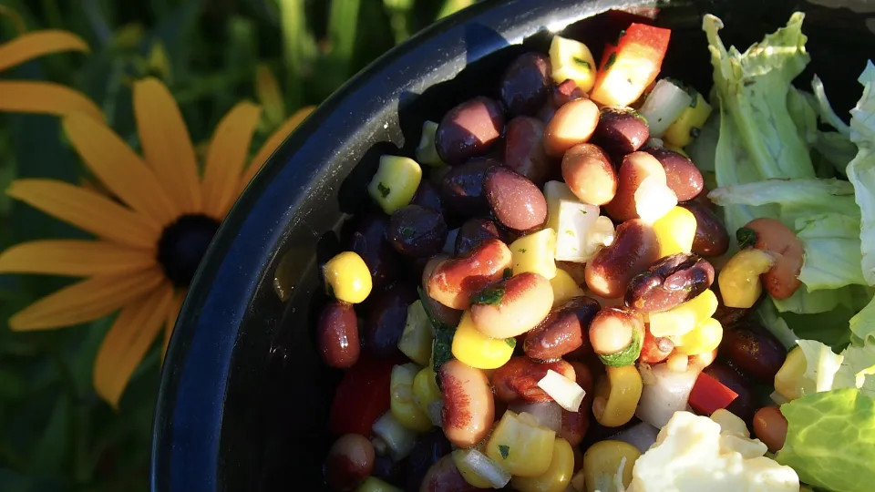

Bahamian bean and Corn Salad

Description
This is a recipe for a black bean, black eyed pea, and corn salad, as originally found on food.com. Feel free to leave out the pepper flakes to reduce heat, or add something else to increase the heat.
Ingredients
- 2 (15 ounce) cans black beans
- 2 (15 ounce) cans black-eyed peas
- 1 (15 ounce) can corn
- 1 large sweet onion, chopped
- 4 garlic cloves, minced
- 2/3 cup apple cider vinegar
- 1/2 cup olive oil
- 1 teaspoon crushed red pepper flakes
- 2 teaspoons sugar
- 1 teaspoon salt
- 1/4 cup fresh cilantro, minced
Steps
- Rinse (optional) and drain the beans and corn, and place in a large bowl.
- Add the onion, red pepper, and garlic.
- Whisk together the vinegar, oil, pepper flakes, sugar, and salt. Pour over bean mixture and toss well.
- Garnish with the cilantro and serve.